Page 1 / 原始页码 1065
第 55 章 感觉系统
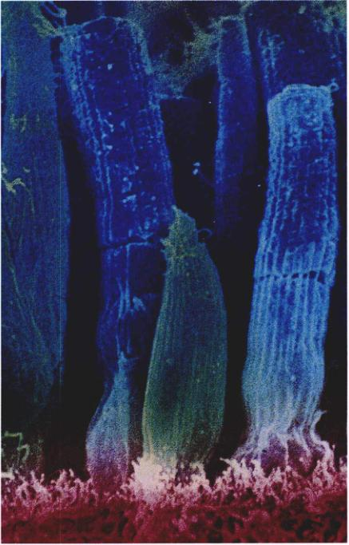
图 55.1 脊椎动物眼内的光感受器 视杆细胞是长杆状的，负责黑白视觉；视锥细胞呈短圆锥状，负责彩色视觉。不是所有的脊椎动物都会有这两种类型的光感受器。
从感觉神经元发送到中枢神经系统的所有信号，都以相同的形式传播，即通过传入感觉神经元产生动作电位来传播。不同的感觉神经元传向脑的不同区域，当然也与不同的感觉模式相关系（图 55.1）。感觉的强度取决于感觉神经元所产生的动作电位的频率。脑可以区分日落、交响乐以及灼痛，因为传送这些动作电位的感觉神经元是不同的；另外，它们产生的刺激的频率也有差异。因此，如果听神经被人为地刺激，脑就会把这种刺激当成是声音；但是，如果视神经受到了方式和程度完全相同的人为刺激，脑就会把这种刺激当成是闪电或光线。
Page 2 / 原始页码 1066
55.1 动物拥有大量的感受器
55.1.1 感受器的分类以及它们的作用
感觉信息通过以下4步过程（图 55.2）传入中枢神经系统而被感觉到：①刺激 (stimulation) 作用——一个感觉神经元或附属结构受到一个物理刺激的冲击；②转换 (transduction) 作用——刺激所产生的能量被用于产生感觉神经元的树突内的神经电化学冲动；③传递 (transmission) 作用——感觉神经元的轴突沿着传入途径，将动作电位传递到中枢神经系统；④翻译 (interpretation) 作用——脑从传入刺激所产生的电化学信号中形成感觉。实际上通过我们的脑，而不是通过我们的感觉器官来观察的。当然，听觉、触觉、味觉以及嗅觉的形成都类似于此。
环境刺激最有效地激活感受器的感觉神经树突，感受器则能区分这些环境刺激的性质差异。大体上讲，我们可以区分出三类环境刺激：①机械力，这种刺激作用于机械感受器 (mechanoreceptor)；②化学物质，这种刺激作用于化学感受器 (chemoreceptor)；③电能和热能，这种刺激可以作用于多种感受器，包括眼里的光感受器 (photoreceptor)（表 55.1）。
最简单的感受器——游离神经末梢 (free nerve ending)，可以对感觉神经元的细胞膜的弯曲、牵张，或者对温度的变化，以及对细胞外液内的化学物质（如氧气）的变化做出反应。其他感受器要更加复杂，它们涉及感觉神经元与特化的上皮细胞的结合。
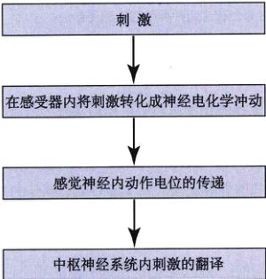
图 55.2 感觉信息的传递路径 感觉刺激必须转换成神经电化学冲动才能传递到大脑进行翻译。
1) 对于内环境和外环境的感觉
外感受器 (exteroceptor) 是感受那些出现在外环境中的刺激的感受器。大约所有脊椎动物的外感受器，都是脊椎动物登陆以前在水环境中进化的。因此，陆生脊椎动物的很多感觉系统，对于那些在水中传播性较好的刺激非常敏感。因为，在从海洋到陆地的进化过程中，一些感受器被保留了下来。比如，哺乳动物可以利用一些与最初在水中进化的某些感受器相似的感受器，将一个靠空气传播的刺激转化成一个靠水传播的刺激。部分脊椎动物的感觉系统，如鱼类的发电器官，在水中可以很好地发挥作用，但却无法在空气中工作，而且，我们也无法在陆生脊椎动物中找到这类结构。另一方面，一些陆生脊椎动物的感觉系统，如红外感受器，也无法在海洋中发挥作用。
感觉系统可以产生有关外环境的多个层次的信息。有些感觉系统产生的信息仅能够确定一件物品的存在：它们可以引起动物对这件物品的注意，但是却无法指明它的位置。另外一些感觉系统可以提供一件物品的位置信息，使动物可以朝着那件物品运动。当然，还有一些感觉系统可以使产生某个物品及其周围环境的三维图像。
内感受器 (interoceptor) 感受来自体内的刺激。这些感受器负责检测肌肉的长度以及张力、肢体的位置、疼痛、血压、血量以及体温和氧含量。很多这类感受器比那些监控外部环境的感受器简单。信置，这些感受器与原始的感受器更为相似。在本章的其余部分，我们将根据感受器所负责检测的刺激的类型，讨论各种类型的内感受器和外感受器（表 55.2）。
2) 感觉的传递
感觉细胞可以对刺激产生响应。因为在它们的细胞膜内具有门控刺激的离子通道 (stimulus-gated ion channel)，感觉刺激会造成某些离子通道的打开或关闭。这个过程主要取决于所涉及的感觉系统。这样，感觉刺激就会改变感受器细胞的跨膜电位。在大多数情况下，感觉刺激会使感受器细胞去极化。这个过程类似于神经递质在突触后细胞内引起的兴奋性突触后电位（我们在第54章中对此进行过描述）。感受器由于受到刺激而产生的去极化叫做感受器电位 (receptor potential)（图 55.3a）。
与兴奋性突触后电位相似，感受器电位也是分级电位；感觉刺激越强烈，去极化的程度就越大。离刺激源的距离增加，感受器电位的幅度减小。这种作用可以避免小的、不相干的刺激到达感觉神经元的细胞体。一旦去极化的程度达到了阈值，感受器电位就会刺激产生动作电位。随后，这个动作电位就会被感觉神经轴突传递到中枢神经系统中（图 55.3b）。感觉刺激越强烈，感受器电位的去极化就越剧烈，动作电位的频率也就越高。刺激的强度与动作电位的频率大致呈对数关系：如果一个感觉刺激比另一个感觉刺激强10倍，那么，它所产生的动作电位的频率就将是那个刺激的两倍。这一效应使得脑能够从传导进来的信号中翻译到刺激的强度。
Page 3 / 原始页码 1067
表 55.2 脊椎动物感觉的传导
| 刺 激 |
感 受 器 |
位 置 |
结 构 |
转 换 过 程 |
| 内感受器 |
| 温度 |
热感受器与冷感受器 |
皮肤、下丘脑 |
游离神经末梢 |
温度的变化使细胞膜上的离子通道打开或关闭 |
| 触摸 |
触觉小体、梅克尔细胞 |
皮肤的表面 |
带有弹性囊的神经末梢 |
迅速或持续的压力变化使细胞膜变形 |
| 振动 |
环层小体 |
皮肤深处 |
带有弹性囊的神经末梢 |
压力的急剧变化使细胞膜变形 |
| 疼痛 |
伤害性感受器 |
贯穿全身 |
游离神经末梢 |
化学物质以及压力和温度的变化，引起细胞膜内的离子通道打开或关闭 |
| 肌肉的牵张 |
牵张感受器 |
肌肉内 |
包裹在肌梭外面的脊神经末梢 |
肌梭的牵张引起细胞膜的变形 |
| 血压 |
压力感受器 |
动脉分叉处 |
动脉壁较薄部分的神经末梢 |
动脉壁的牵张引起细胞膜的变形 |
| 外感受器 |
| 重力 |
平衡泡 |
内耳的外腔 |
耳石与毛细胞 |
耳石使毛细胞变形 |
| 运动 |
壶腹帽 |
内耳的半规管 |
大量的毛细胞 |
液体的流动引起毛细胞的变形 |
|
侧线 |
鱼体表的槽内 |
大量的毛细胞 |
液体的流动引起毛细胞的变形 |
| 味觉 |
味蕾 |
口，鱼的皮肤 |
化学感受器：有微绒毛的上皮细胞 |
化学物质与细胞膜上的受体结合 |
| 嗅觉 |
嗅神经元 |
鼻道 |
化学感受器：有纤毛的神经元 |
化学物质与细胞膜上的受体结合 |
| 听觉 |
科尔蒂器 |
内耳蜗 |
基底膜与覆膜之间的毛细胞 |
液体中的声波引起细胞膜的变形 |
| 视觉 |
视杆细胞和视锥细胞 |
眼中的视网膜 |
成束的光敏色素 |
光线引发关闭离子通道的过程 |
| 热 |
陷器 (pit organ) |
蛇的面部 |
在两个胞内的温度感受器 |
感受器比较外腔和内腔的温度 |
| 电场 |
罗氏壶腹 |
鱼类的皮肤内 |
有离子通道非对称分布的封闭的管道 |
电场改变细胞膜上的离子分布 |
| 磁场 |
未知 |
未知 |
未知 |
磁场的偏转引发神经冲动？ |
Page 4 / 原始页码 1068
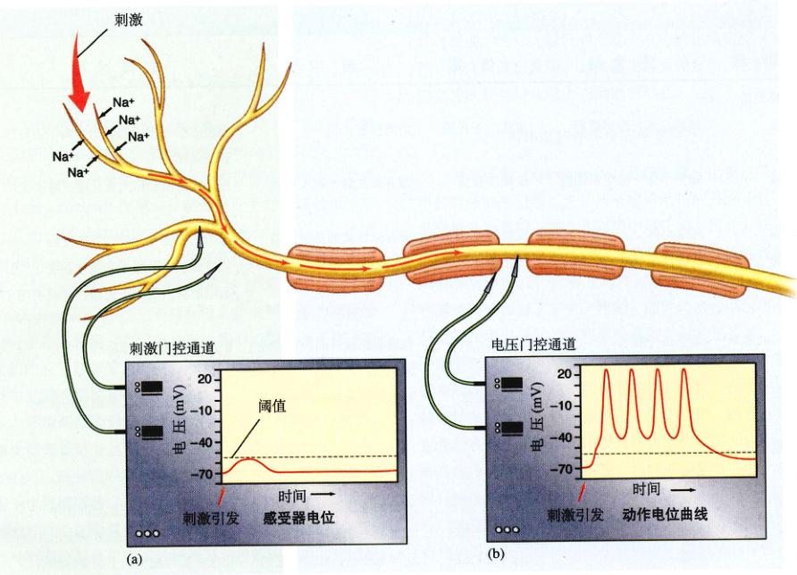
图 55.3 感觉转换过程发生的事件 (a) 游离神经末梢的去极化产生感受器电位。(b) 一个足够大的感受器电位致使轴突产生动作电位，由上局部分电流方式传播。
55.2 化学感受器和机械感受器感知机体的状况
55.2.1 检测温度和压力
皮肤里的感受器叫做皮肤感受器 (cutaneous receptor)。虽然这类感受器被归入了内感受器，实际上，它们是负责对内、外环境的分界处的刺激做出响应。它们可以感受对包括热刺激、冷刺激、疼痛、触摸以及压力，所以它们可以很好地说明感受器的结构和功能的特殊性。
皮肤内有两类温度感受器 (thermoreceptor)。它们是感觉神经元的裸露的树突末梢，对温度的变化十分敏感。冷感受器在温度下降时被激活，在温度升高时被抑制；而热感受器在温度升高时被激活，在温度降低时被抑制。冷感受器非常接近于表皮；而热感受器则埋得要深一些，已经进入了真皮。温度感受器也存在于下丘脑中，在那里，它们会检测血液的温度，并向中枢神经系统提供有关体温的信息。
那些引起或者将引起组织损失的刺激会引发痛觉。这些传递痛觉的感受器，被称为伤害性感受器 (nociceptor)。它们由贯穿全身的游离神经末梢，特别是接近于体表，即伤害的高发区的那些游离神经末梢所组成。不同的伤害性感受器可能会对温度的剧烈变化、剧烈的机械刺激，或者是由细胞外液中的特殊化学物质，包括受伤的细胞所释放出的化学物质做出反应。这些感受器细胞的阈值各不相同。有些伤害性感受器仅仅对真正受到损伤的组织敏感；而另一些伤害性感受器则可以在损伤发生前就做出响应。
皮肤里存在有几类机械感受器，一些位于真皮中，另一些则位于皮下组织中（图 55.4）。那些特化的可对轻微的触摸产生响应的感受器，主要集中在指尖和面部区域。它们通常可以精确地定位皮肤刺激。它们的作用方式既可以是阶段性的（间歇式地被激活），也可以是紧张性的（连续地激活）。阶段性感受器，包括毛囊感受器 (hair follicle receptor) 以及触觉小体 (Meissner's corpuscle)。后者位于体表未被毛发覆盖的部分，如指头、手掌以及乳头。
Page 5 / 原始页码 1069
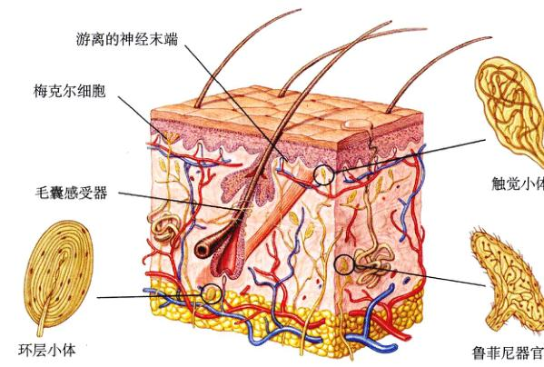
图 55.4 人皮肤中的感受器 皮肤感受器是游离的神经末梢或与其他支持结构相关的感觉神经树突。
紧张式感受器，包括真皮中的鲁菲尼末梢 (Ruffini ending) 以及接近于皮肤表面的触觉神经末梢 (touch dome ending)，即梅克尔细胞 (Merkel cell)。这些感受器监控刺激的时间长度及强度。
在皮肤深处的皮下组织中，有一类对压力敏感的紧张式感受器。它们就是环层小体 (Pacinian corpuscle)。这种感受器由一条传入轴突的末梢组成，周围被结缔组织细胞以及细胞外液交替包裹。当细胞受到持续的压力时，有弹性的内囊就会吸收掉大部分的压力，这样，轴突就停止产生神经冲动。当皮肤与某些振动的物体相接触时，环层小体仅仅负责控制这些物体所产生压力的产生和消除。
55.2.2 感受肌肉的收缩与血压
机械感受器中还有一种感觉细胞，其上的某些离子通道对于细胞膜所受到的机械力十分敏感。这些离子通道在细胞膜发生机械形变时就会发生去极化（感受器电位），并使感觉神经元产生动作电位。
1) 肌肉的长度和张力
肌梭埋在除硬骨鱼以外的所有脊椎动物的骨骼肌中。它们是牵张感受器，位置与肌肉中的其他纤维相平行（图 55.5）。每个肌梭都包括几条细的肌纤维。它们被一个感觉神经元包裹到一起，并被这个神经元所控制。当肌肉受到牵张时，肌梭也随之牵张，就激活了这个感觉神经元。肌梭以及肌腱和关节内的其他一些感受器统称为本体感受器 (proprioceptor)。这些感受器负责提供有关机体各部分的相对位置与运动状况的信息。这些感受器将动作电位传送到脊髓中。在那里，它们与负责控制肌肉的运动神经元形成突触。这一途径构成了肌肉内牵张反射，包括我们在第54章中讨论过的膝跳反射。
当一块肌肉收缩时，它会对附着在其上的肌腱产生张力。另一种本体感受器——高尔基肌腱器——负责控制这种张力。如果这种张力过大，它们就会引起一种反射，从而抑制控制该块肌肉的运动神经元。这种反射帮助保护肌肉不会过分强烈地收缩，以免使肌肉腱受到损伤。
2) 血压
血压受到身体内两个主要部位的控制：一个是颈动脉窦 (carotid sinus)，它位于负责向脑输送血液的左颈动脉和右颈动脉窦膨大的结构内；另一个是主动脉弓 (aortic arch)，位于主动脉，非常接近心脏。在这些部位的血管壁中，都包含有一个高度分叉、由传入神经元组成的网状结构，这就是压力感受器 (baroreceptor)。这一感受器负责检测血管壁中的张力。当血压降低时，压力感受器所形成的神经冲动的频率也会随之降低。中枢神经系统就会对这种减弱的输入信号做出响应，激活自主神经系统的交感神经分支，从而使心跳加快，血管收缩加强。这两种效果都可以帮助提高血压，这样就可以保持体内稳态。与此相反，血压的升高会降低交感神经的活性，并激活副交感神经分支，从而使心率减慢，血压降低。
Page 6 / 原始页码 1070
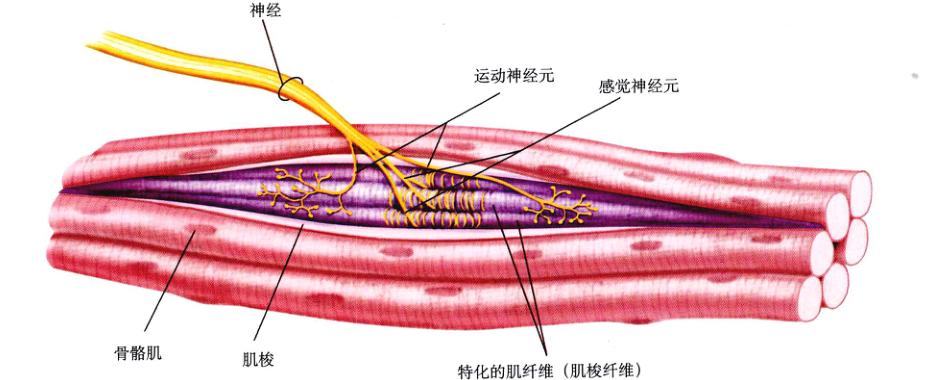
图 55.5 肌梭是埋在骨骼肌中的牵张感受器 牵张肌肉时，肌梭也被牵张，刺激了包围在外的感觉神经树突末端，导致感觉神经将冲动传到与运动神经有突触联系的中枢神经系统。
55.2.3 感受味道、气味以及身体的位置
一些叫做化学感受器的感觉细胞含有可以与细胞外液中特定的化学物质相结合的膜蛋白。这些感觉细胞的细胞膜在化学物质的作用下会发生去极化，从而导致神经冲动的产生。化学感受器用于感受味道以及气味，同时，它们对于血液和脑脊液的化学组成的控制也十分重要。
1) 味道
味蕾是聚集在一起的具有化学感受功能的上皮细胞，它们与传入神经元相连，负责调节脊椎动物的味觉。在一条鱼中，味蕾分散在身体的表面。它们是目前所知道的脊椎动物的所有化学感受器中最敏感的一种。它们对于氨基酸尤其敏感，鲶鱼的味蕾甚至可以在浓度不足千万分之一（1万升水中，仅有 1g 溶质）的情况下，区分出两种不同的氨基酸！这种能力对于在深水生活的鱼类尤其重要，正是这种能力使得它们能够在一个黑暗的环境中发现食物的存在。
陆生脊椎动物的味蕾位于舌头和口腔上皮上那些叫做乳头 (papillae) 的突起上（图 55.6）。味蕾有洋葱形的结构，其中含有 50 ~ 100 个味觉细胞，每一个味觉细胞上都有手指状的突出物，这一结构叫做微绒毛。溶在唾液中的食物所产生的化学物质通过味孔与味蕾发生联系。
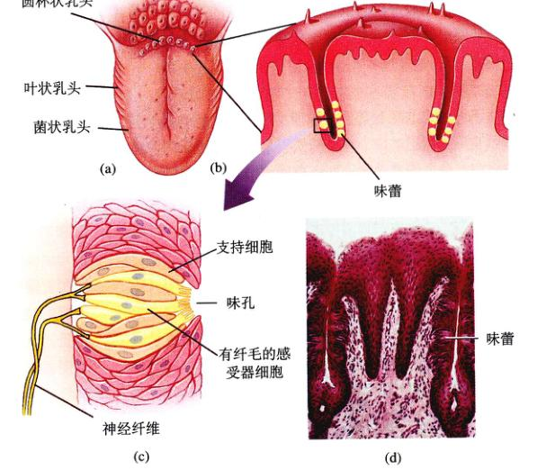
图 55.6 味觉 (a) 人的舌头有 3 种类型的突起，即分布在舌头不同部位上含有味蕾的乳头。(b) 一组味蕾埋在乳头中。(c) 单独的味蕾呈球形，内有化学感受器，通过管道开口于口腔。(d) 乳头中味蕾的显微照片。
Page 7 / 原始页码 1071
在味蕾内，产生咸味和酸味的化学物质直接通过离子通道发生作用，而那些产生甜味和苦味的化学物质则与表面特定的受体蛋白结合，激活 G 蛋白，从而在细胞内产生影响，最终打开或关闭离子通道。这些变化引起的信号由味蕾通过感觉神经元传递到脑，在脑中，它们与那些和气味有关的其他信息发生相互作用。
与脊椎动物相似，很多节肢动物也有感觉味道的化学感受器。比如，苍蝇的寻找食物的方式，在它们足的感觉毛里有味觉感受器。这些感觉毛含有不同的化学感受器，因此可以发现糖、盐以及其他分子（图 55.7）。通过对这些化学感受器产生的刺激进行整合，它们可以感受到很多种味道。如果它们位于食物之上，它们的吻（管状的取食器官）就会伸向食物。
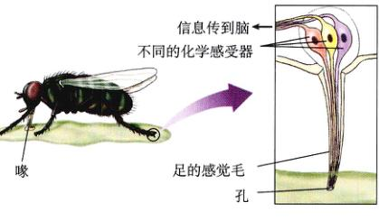
图 55.7 许多昆虫用足“品尝”食物 图中苍蝇的化学感受器延伸至足的感觉毛上，不同的化学感受器感受不同类型的食物分子。当此苍蝇停在食物表面时，它就“尝”到了不同的食物分子，随之伸出吻取食。
2) 气味
在陆生的脊椎动物中，嗅觉的产生离不开位于鼻腔上部的化学感受器（图 55.8）。这些感受器是双极神经元，它们的树突终止于指向鼻黏膜纤毛的缘中，而它们的轴突则直接指向大脑皮层。陆生脊椎动物利用嗅觉来感知周围环境的方式与鱼类利用味觉感知十分相似。由于陆生脊椎动物生活在空气中而不是水中，它们的嗅觉已经特化来感知空气传播的物质（但是，这些物质在激活嗅觉感受器前，首先必须能够溶解在细胞外液中）。很多哺乳动物的嗅觉十分灵敏，甚至一个有气味的分子就能够使特定的感受器兴奋。
虽然人类仅仅可以感觉四种不同形式的味道，但是我们却能够区别成千上万种不同的气味。最近的研究表明，可能有 1000 种不同的基因，负责编码与味觉有关的各种感受器蛋白。那些对特定的气味做出反应的嗅神经元，作为大脑的“指纹图谱”，可鉴别不同的气味。
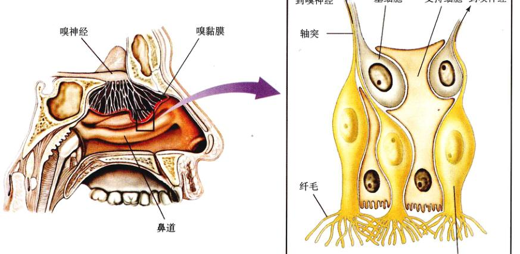
图 55.8 味觉 人通过分布在鼻道内的嗅神经探测味道。神经冲动通过嗅神经的轴突直接传到脑。基细胞产生的嗅神经元来代替坏死或损伤的细胞。嗅神经元一般可存活 1 个月。
Page 8 / 原始页码 1072
3) 体内的化学感受器
体内的感受器，负责测试血液或由血液所衍生出的体液（包括脑脊液）的多种多样的化学特征。这些感受器包括颈动脉体和主动脉体的外周化学感受器 (peripheral chemoreceptor) 和位于脑的延髓中的中枢化学感受器 (central chemoreceptor)。前者对血浆和淋巴液的 pH 值尤其敏感，后者对脑脊液的 pH 值敏感。在第53章中讨论呼吸调节时曾谈到这些感受器。当呼吸速率太低时，血浆和淋巴液中的二氧化碳浓度升高，产生更多的碳酸，并使血液的 pH 值降低。二氧化碳也会进入脑脊液中，并引起其 pH 值的降低，从而对中枢化学感受器产生刺激。这些化学感受器所受到的刺激，将间接地影响脑干中的呼吸控制中枢，使呼吸速率提高。主动脉体也可以对血液中氧气浓度的降低做出反应。但是这一效果通常并不明显，除非人进入高原地区。
4) 侧线系统
侧线系统使鱼类可以感觉到“远处的触摸”，这样它们就能感觉到那些能够反射压力波或者以低频振动的物体。这可以帮助鱼类发现捕食者，也可以使它们与鱼群保持同步。此外，这还使生活在洞穴中的盲鱼，通过感觉流经其侧线感受器的水流模式的变化，来感知自己所处的环境。侧线系统也存在于两栖动物的幼体中，但是，这种结构却会消失在变态过程中。所有陆生脊椎动物都没有这种结构。侧线系统所提供的感知能力，对鱼类的听觉起到了补充作用。鱼类的听觉作用是通过另一个感觉结构进行的。我们将后面的部分中对这些与听觉有关的结构和机制进行描述。
侧线系统由鱼类皮肤里的一条纵向管内的感觉结构组成。这种纵向管在身体的两侧延伸，并汇入头部的几条管道中（图 55.9a）。这些感觉结构称为毛细胞，因为它们的表面长有毛状的结构。

图 55.9 侧线系统 (a) 这个系统由鱼皮下与身体等长的管道组成。管道中有感觉器，其中毛细胞的纤毛伸入壶腹帽。管道中传播的压力波使得纤毛发生弯曲，与毛细胞相连的感觉神经元去极化。(b) 毛细胞是机械感受器，具有毛发状的纤毛，这些纤毛伸入凝胶状的膜内。侧线系统（和脊椎动物的内耳迷路）中的毛细胞上一些短的纤毛叫静毛，一根长的叫动纤毛。当纤毛弯向动方向时，毛细胞就释放出一种化学物质，使相连的感觉神经去极化。当纤毛弯向相反的方向时，则产生抑制效果。
Page 9 / 原始页码 1073
这些结构伸入一个叫做壶腹帽的凝胶状的膜内。这些毛细胞负责将神经冲动传递进脑的感觉神经元所控制。
毛细胞有几个毛状的结构。长度大致相当的那几个叫做静纤毛 (stereocilia)，另一个稍长的结构叫做动纤毛 (kinocilium)（图 55.9b）。鱼类生活环境中的振动使壶腹帽发生运动，进而使得这些纤毛发生弯曲。当静毛朝着动毛弯曲时，与之相连的感觉神经元就被激活，产生一个感受器电位。这样，感觉神经元所产生的动作电位的频率就会提高。如果静毛朝另一侧弯曲，那么感觉神经元的活动就会被抑制。
5) 重力加速度与角加速度
大多数无脊椎动物都可以感觉重力的作用，这与一个叫做平衡囊 (statocyst) 的感觉结构有关。平衡囊通常由有纤毛的毛细胞组成。这些毛细胞的纤毛从凝胶状的、含有碳酸钙晶体的细胞膜内伸出。这些“石头”，或称作平衡石 (statolith)，增加了这些凝胶状的细胞膜的质量，以致于当动物的位置发生变化时，能够造成纤毛的弯曲。如果动物向右倾斜，这些细胞膜就会使右侧的纤毛弯曲，从而激活与之相连的感觉神经元。
脊椎动物内耳中也有一个类似的结构，这就是内耳迷路。内耳迷路是由一个充满液体的腔和管组成的系统。这些腔和管同时也和脊椎动物的平衡器官和听觉器官的组成部分。这些螺旋管被骨头和外淋巴所包围。外淋巴的离子组成与组织间液相似。在这些管、腔的内部，充满了内淋巴液，内淋巴液的离子组成与细胞内液相似。虽然整个结构十分复杂，但是却很小。人体内的这种结构大约只有一颗豌豆那么大。
脊椎动物的重力感受器由两个叫做椭圆囊和球状囊的内耳迷路的腔组成（图 55.10）。在这些结构里含有硬纤毛的毛细胞以及一根动纤毛，非常类似于鱼类的侧线系统中的对应结构。这些毛状突起包埋在内耳的凝胶状的含有碳酸钙晶体的细胞膜中，这就是耳石膜 (otolith membrane)。由于耳石在椭圆囊和球状囊中的朝向不同，椭圆囊对于水平加速度（如在行驶的汽车中）很敏感，而球状囊则对于垂直加速度（如在一部电梯中）很敏感。在这两种情况下，加速度都会使硬纤毛弯曲，从而使与之相连的感觉神经元产生一个动作电位。
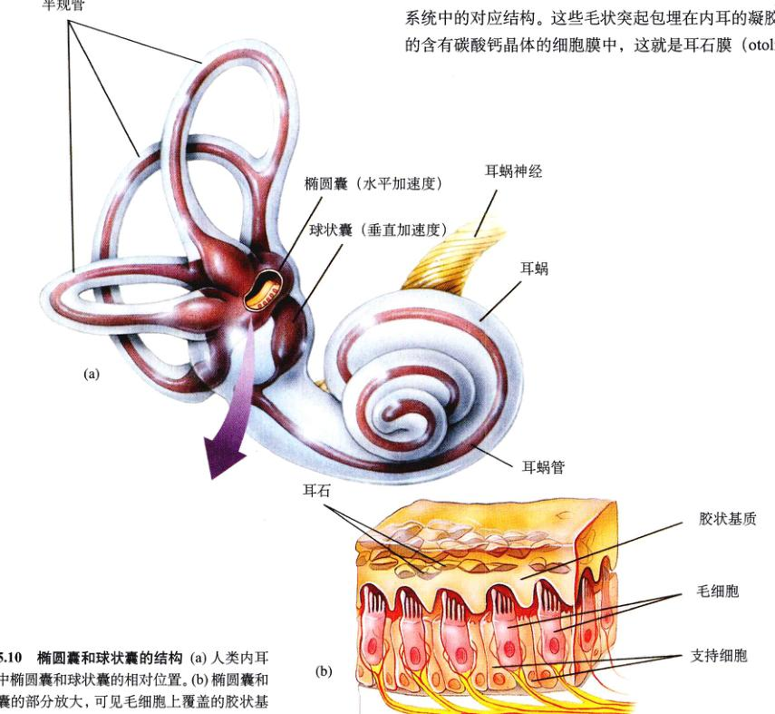
图 55.10 椭圆囊和球状囊的结构 (a) 人类内耳迷路中椭圆囊和球状囊的相对位置。(b) 椭圆囊和球状囊的部分放大，可见毛细胞上覆盖的胶状基质中的耳石。
Page 10 / 原始页码 1074
椭圆囊和球状囊的内耳迷路与 3 个半规管相连。这 3 个半规管位于不同的平面内。这样，动物就可以感受到任何一个方向的角加速度（图 55.11）。在这些半规管的末端是膨大的腔室，叫做壶腹 (ampullae)。另一群毛细胞的纤毛伸入壶腹中。这些纤毛的尖端镶嵌在一个楔形的叫做壶腹帽 (cupula)（类似于鱼类的侧线系统中的壶腹帽）的凝胶状物质中。壶腹帽则插进了每个半规管的内淋巴液里。
当头部旋转时，半规管内的液体挤压壶腹帽并使纤毛弯曲。这一效果，要么使毛细胞去极化，要么使毛细胞超极化，这取决于纤毛弯曲的方向。这与鱼类的侧线系统的工作方式十分相似。如果硬纤毛朝着动纤毛弯曲，就会产生去极化（感受器电位），这将激发与之相连的感觉神经元内的动作电位的产生。
椭圆囊、球状囊以及半规管统称为前庭器官 (vestibular apparatus)。椭圆囊与球状囊负责感知线加速度，而半规管则负责感知角加速度。脑利用这些来自前庭器官的有关身体位置的信息来保持平衡。
55.3 听觉感受器检测空气中的声波
55.3.1 耳朵与听觉
鱼类通过侧线系统来感知水的压力波。陆生脊椎动物通过内耳中类似的毛细胞化学感受器来感知空气中的压力波。实际上，水中听觉作用的效果比在陆地上的好，因为液体能够更有效地传播压力波。尽管这个不足，陆生脊椎动物仍广泛采用听觉这种方式感知它们的生存环境。与同种的其他个体进行交流，检测可能造成的危险（图 55.12）。听觉刺激比化学刺激传播距离更远，传播速度也更快。同时，与光学感受器相比，听觉感受器能够提供更直接的信息。然而，听觉刺激本身却无法提供有关距离的信息。
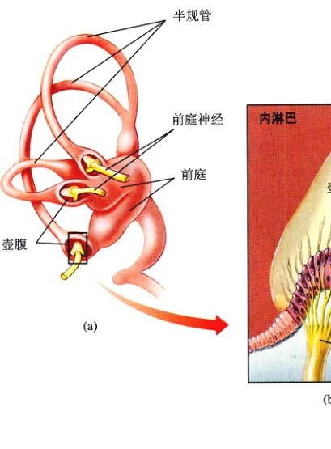
图 55.11 半规管的结构 (a) 内耳中半规管的相对位置。(b) 部分壶腹的放大，显示毛细胞的纤毛如何插入壶腹帽中。(c) 半规管平面上的角加速度导致壶腹帽的弯曲，刺激毛细胞。
Page 11 / 原始页码 1075
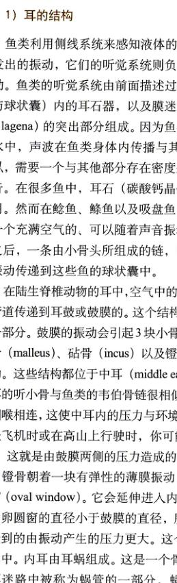
图 55.12 更格卢鼠 (Dipodomys) 的耳朵结构尤为独特 它具有超大的鼓膜、超长的可自由转动的锤骨（耳骨）以及腔室体积超大且充满空气的中耳。这些特征和其他的特化结构增加了其对声音的敏感度，特别是对低频率的声音的感知。实验表明，更格卢鼠的耳朵能够适应夜生活，使它们可以听见捕食者发出的低频声音，如猫头鹰翅膀的扇动和响尾蛇在地上游走的声音。具有这种耳朵的动物似乎更适宜生活在沙漠中，因为那里的干燥空气是声音的不良载体。
1) 耳的结构
鱼类利用侧线系统来感知液体的流动以及邻近物体所发出的振动，它们的听觉系统则负责感知来自远处的振动。鱼类的听觉系统由前面描述过的内耳迷路（椭圆囊与球状囊）内的耳石器，以及膜迷路上的一个叫做壶 (lagena) 的突出部分组成。因为鱼类的身体主要包埋在水中，声波在鱼体内传导与在水中一样容易，所以，需要一个与其他部分在密度差异较大的物体来感知声音。在很多鱼中，耳石（碳酸钙结晶体）就起着这样的作用。然而在有些鱼，鲱鱼以及吸盘鱼中，这一功能却是由一个充满空气的、可以随着声音振动的鱼鳔完成。在这之后，一条由小骨头所组成的链，即韦伯伯骨链，就会把振动传递到这些鱼的球状囊中。
在陆生脊椎动物的耳中，空气中的振动可能是沿着一条管道传递到耳鼓或鼓膜的。这个结构是外耳 (outer ear) 的一部分。鼓膜的振动会引起 3 块小骨头（听小骨）——锤骨 (malleus)、砧骨 (incus) 以及镫骨 (stape) ——的振动。这些结构都位于中耳 (middle ear) 内（图 55.13）。中耳的小骨与鱼类的韦伯伯骨链很相似。中耳通过咽鼓管与咽相连，这使得中耳内的压力与环境压力保持平衡。在乘坐飞机时或在高山上行驶时，你可能曾经经历过“耳鸣”，这就是由鼓膜两侧的压力造成的。
镫骨朝着一决有弹性的薄膜振动，这块薄膜就是卵圆窗 (oval window)。它会延伸进入内耳 (inner ear) 中。因为卵圆窗的直径小于鼓膜的直径，所以它单位面积上所受到的由振动产生的压力更大。这个压力将被传递到内耳中。内耳由耳蜗组成。这是一个管结构，其中包括含有内耳迷路中液体为蜗管的一部分。蜗管位于耳蜗的中心；耳蜗以上的部分是前庭管 (vestibular canal)，其下的部分则是鼓室管 (tympanic canal)。像前面提到的那样，这三个腔室都充满了液体。卵圆窗开向前庭管的前部。这样，当镫骨引起它的振动时，它就会在液体中产生压力波。这些压力波传到鼓室管，推动另一块叫做圆窗 (round window) 的薄膜，从而将压力传送回中耳腔内（图 55.13）。
2) 压力波在耳蜗内的传输
卵圆窗产生的压力波通过耳蜗传递到圆窗。这个压力波会引起耳蜗管的振动。耳蜗的基底是一个叫做基底膜 (basilar membrane) 的结构，其弹性良好，可以随着压力波振动。基底膜的表面长有感觉毛细胞。它们类似于前庭器官以及侧线系统的毛细胞，只是没有动纤毛。毛细胞上的纤毛插进了一个凝胶状的、悬在基底膜上方的叫做覆膜的薄膜内。基底膜、毛细胞以及与之相连的感觉神经元和覆膜组成的感觉器官就叫做螺旋器 (organ of Corti)。
随着基底膜的振动，毛细胞的纤毛也会与覆膜发生相对运动。与侧线器官和前庭器官中的情况类似，这些纤毛的弯曲使毛细胞去极化。接着，毛细胞就会使指向脑的感觉神经元中产生动作电位。在脑中，这种动作电位就会被翻译成声音。
3) 耳蜗内的频率分布
耳蜗的基底膜由长度和弹性各异的弹性纤维组成。它们就像竖琴的弦，镶嵌在一种凝胶状的物质中。在耳蜗的基底（接近于卵圆窗），基底膜上的纤维短而硬；在耳蜗的远端（基顶），这些纤维的长度则是基底纤维的 5 倍，而弹性更是基底纤维的 100 倍。
Page 12 / 原始页码 1076
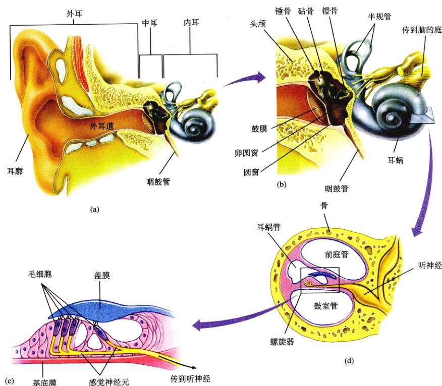
图 55.13 人耳的结构 (a) 耳道中声波的传递导致鼓膜的震动，通过 (b) 听小骨（锤骨、砧骨、镫骨）引起里面的卵圆窗的运动。卵圆窗的振动产生在耳蜗内前庭管和鼓室管内传播的压力波 (c) 和 (d)。
这样，基底膜的基底共振频率要高于基顶膜；因此，基底响应高音，基顶则响应低音。
当声波从卵圆窗进入耳蜗后，它会引起基底膜上的下振动。声波所携带的大部分能量，都将被输送到基底膜上共振频率与声波频率最接近的那一部分，从而使那个部分的振幅最大（图 55.14）。这样，那个区域内的毛细胞的去极化程度也最大，与之相连的传入突触内产生的动作电位也多于其他区域。这些动作电位传达到脑时，它们将被翻译成频率相同的声音或音调。
基底膜的弹性限制了人类能够听到的声音范围。孩子大约能够听到 20 ~ 20 000 Hz 的声音。从中年开始，人类对高音的听觉能力逐渐下降。其他一些脊椎动物可以听到低于 20 Hz 的声音，也可以听到远高于 20 000 Hz 的声音。比如狗就可以听到 40 000 Hz 的声音。这样，狗就可以听到它们所发出的高频啸叫，而人类却无法听见。
毛细胞也受到传出轴突的控制。这些轴突内的神经冲动会降低毛细胞的敏感性。对于感觉器官灵敏性的中枢调节，可以增加个体对于嘈杂环境中的某一特定听觉信号（如某种说话声）的敏感性。形象地讲，这些噪音被传入轴突有效地滤略去了。
Page 13 / 原始页码 1077
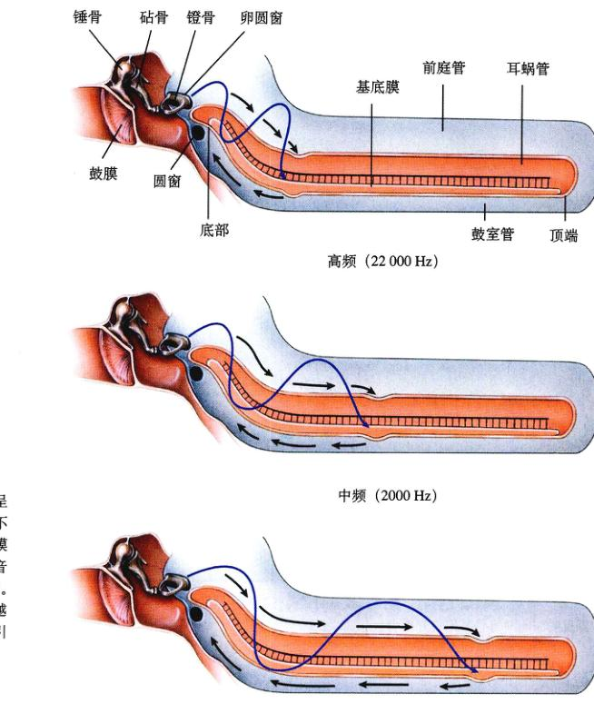
图 55.14 耳蜗内的频率分布 耳蜗呈未卷曲状态，可看出基底膜的长度。不同的声调有不同的频率，引起基底膜上纤维的振动。因此不同频率的声音在基底膜上的不同部位引起最大振幅。频率越低，在基底膜上引起的振动越靠近顶点；频率越高，在基底膜上引起的振动越靠近底部。
55.3.2 声纳
由于陆生脊椎动物的两耳位于头部的两侧，中枢神经系统可以利用它们所提供的听觉信息来确定声源的方位。但是，声源的强度各异，同时，声音也会随着传播距离的加长而减弱，因此，听觉无法提供有关距离的准确信息。
一些生活在黑暗环境中的哺乳动物，通过某些途径绕开了黑暗的限制。在一间漆黑的屋子里飞行的蝙蝠，可以轻松地躲避设置在它飞行路线中的物体，就连直径不足 1 mm 的电线也不例外；地下的尖鼠也有种类似的“无光视觉”；当然，海洋中的鲸和海豚也一样。这些哺乳动物都是通过声纳来感知距离的。它们先发出一个声音，然后确定出这个声音碰到一个物体并返回的时间。这种方法叫做回音定位。一只蝙蝠可以产生持续 2~3 μs，频率大约为几百赫兹的声音（图 55.15）。动物通过声纳系统获得三维形象的过程十分复杂。
蝙蝠在黑暗中的视觉能力，使之获得了另一个生态位。而这个生态位对于鸟类来说，却是关闭的。因为鸟类离不开视觉。实际上，并不存在真正在夜间生活的鸟，即便如猫头鹰，也要依靠视觉来捕捉猎物，它们也在黑夜中飞翔。由于蝙蝠能够在完全的黑暗中有效地行动，它们成了分布最广、数量最多的哺乳动物之一。
Page 14 / 原始页码 1078
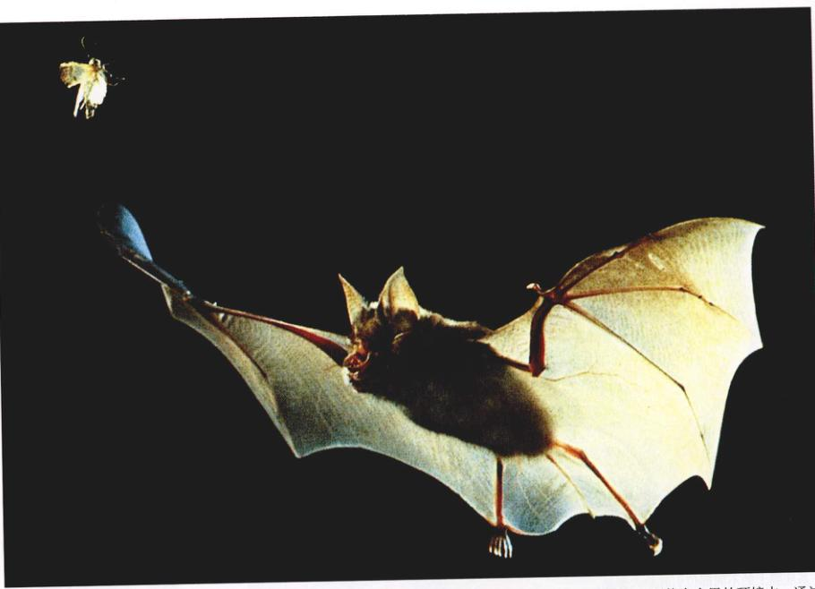
图 55.15 声纳 当蝙蝠飞行时，发出高频率的“滴答”声，然后接收听从其他物体（如飞蛾）上的反射。即使在全黑的环境中，通过计算反射时间即可将其定位并捕食。
55.4 视觉感受器可以检测很宽波长范围内的光线
55.4.1 眼睛的进化
随着能够捕捉光能的光学感受器的出现，视觉就产生了。由于光沿直线传播，并且不会间断，视觉既可以提供某物体方位的信息，又可以提供它的距离信息。其他任何刺激都无法提供如此详细的信息。
很多脊椎动物的视觉系统很简单。在这种系统中，光学感受器聚集在眼点内。覆盖在眼睛一侧的色素层可以使简单的眼点对光源的方位敏感。扁形动物的两个眼点的内侧和后侧都有一层色素层。这样，只有来自前方的光线，才能对光学感受器产生刺激（图 55.16）。扁形动物将朝向光学感受器受到刺激最弱的那个方向游动。虽然眼点可以感知光线的方向，但是却无法形成图像。环节动物、软体动物、节肢动物以及脊椎动物则进化出可以形成图像的眼睛。这些门的动物的眼睛，都真正可形成图像，而且它们的结构也很类似。但是，据考证它们是独立进化来的（图 55.17）。有趣的是：它们的光学感受器采用的是相同的吸光分子。这意味着能够充当这一角色的分子种类十分有限。
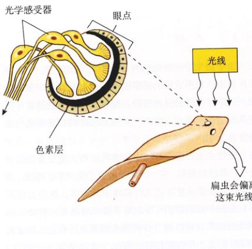
图 55.16 简单的扁虫眼点 一层色素层覆盖在眼睛的一侧感受来自背部的光线，这使得扁虫可以感知光线的方向。因此，当以方的光线最强时，扁虫会偏离这束光线。
Page 15 / 原始页码 1079
脊椎动物眼睛的构造
人的眼睛是一种典型的脊椎动物的眼睛（图 55.18）。眼睛中白色的部分是巩膜 (sclera)。它由坚硬的结缔组织组成。光线通过透明的角膜 (cornea) 进入眼睛，并开始被汇聚。这是由于光线从一种介质进入另一种密度不同的介质时会发生偏折。眼睛有颜色的部分是虹膜 (iris)。强光会引起虹膜肌的收缩，从而使瞳孔 (pupil) 缩小。光线穿过瞳孔进入晶状体 (lens)。这是一个透明的结构。在这个结构上，光线被完全聚焦到眼睛后部的视网膜 (retina) 上。晶状体通过悬韧带 (suspensory ligament) 与睫状肌 (ciliary muscle) 连接。
晶状体的形状受悬韧带紧张程度的影响。悬韧带包围着晶状体，并将连接到睫状肌上。当睫状肌收缩时，它就会使悬韧带松弛，这样晶状体就变得更加圆，也更加灵敏。这种情况出现在近距离的视觉过程中。在远距离的视觉过程中，睫状肌松弛，移动晶状体并拉紧悬韧带。这样晶状体就会变得更平，灵敏度也会降低，以保证成象在视网膜上。患近视或远视的人无法在视网膜上正常地成像（图 55.19）。有意思的是：两栖动物以及鱼类的晶状体的形状并不会改变。这些动物会像照相机那样，通过将晶状体收进、伸出来进行聚焦。
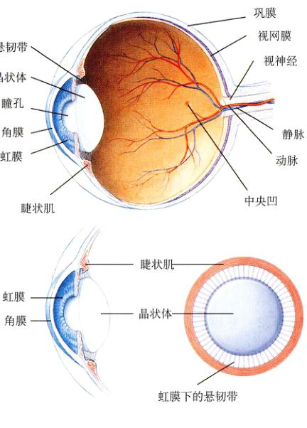
图 55.18 人眼的结构 透明的角膜和晶状体使光线聚焦到眼睛后部含有视锥细胞和视杆细胞的视网膜上。每个眼睛视野的中心集中在中央凹。睫状肌收缩或松弛调整晶状体的曲率，使光线聚焦。
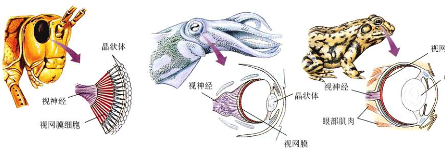
图 55.17 3 个不同门的动物的眼睛 虽然它们表面上看起来很相似，其实它们在结构上极不相同，不是同源的。与简单的结构相比，它们结构复杂，分别是单独进化而来的。
Page 16 / 原始页码 1080
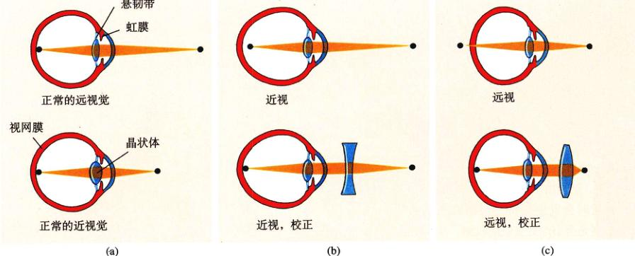
图 55.19 人眼的聚焦 (a) 正常视力的人通过调整晶状体的曲率最小状态，成像在视网膜上。当人站在距离一个物体 6m (20英尺) 或更远出，晶状体处于曲率最小状态，成像在视网膜上。(b) 近视的人，成象在视网膜前，因此是模糊的。(c) 远视的人像成在视网膜后，因为晶状体到达视网膜的距离太短。
55.4.2 脊椎动物的光感受器
脊椎动物的视网膜上有两种光感受器 (photoreceptor)，分别叫做视锥细胞 (cone) 和视杆细胞 (rod)（图 55.20）。视杆细胞负责产生黑白的模糊视觉，而视锥细胞则负责产生彩色的精细视觉。人类的每个视网膜上大约有 10 亿个视杆细胞以及 300 万个视锥细胞。大多数的视锥细胞都位于视网膜的一个叫做中央凹 (fovea) 的地方。在那里，眼睛将形成最鲜明的图像。但是，中央凹中却几乎没有视杆细胞。
视杆细胞和视锥细胞的基本结构相同。内段有大量的线粒体以及大量的充满神经递质分子的囊泡小体。这个部分通过一个狭窄的柄与外段相连。而外段中成百上千个片状视盘，上下重叠。吸光分子，即感光色素 (photopigment)，就位于这些圆盘的膜上。
在视杆细胞中的感光色素叫做视紫红质 (rhodopsin)。它由结合了顺式视黄醛 (cis-retinal) 的视蛋白 (opsin) 组成（图 55.21），是由植物体内的一种光合色素——胡萝卜素——衍生而来的。视锥细胞内的感光色素叫做视蓝蛋白 (photopsin)，其结构与视紫红质非常相似。人类有 3 种视锥细胞，每一钟都含有视蓝蛋白，只是与其上的顺式视黄醛相连的蛋白质的氨基酸序列稍有不同。这些差异造成了最大吸收值 (absorption maximum) 的差异——使这种色素表现出最大吸收所在的电磁波谱的区域出现了差异（图 55.22）。光视蛋白中的视黄醛的最大吸收为 500 nm。3 种视锥细胞中的光视蛋白的最大吸收则分别为 455 nm（蓝光）、530 nm（绿光）、625 nm（红光）。这 3 种光吸收中表现出的差异与 3 种视锥细胞对颜色的敏感程度密切相关。因此，这些视锥细胞通常被叫做蓝视锥、绿视锥、红视锥。
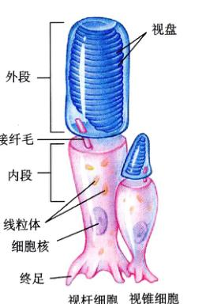
图 55.20 视杆细胞和视锥细胞结构 每种细胞充满色素的外段与细胞的其他部分是隔离的，中间仅以连接纤毛这一狭窄的通道相连。
大多数的脊椎动物，尤其是那些在白天活动的脊椎动物，能产生彩色的视觉。此外，很多昆虫也能产生同样的视觉。实际上，蜜蜂可以看见近于紫外区的光线，而人类却没有这种能力。彩色视觉的产生至少需要接受细胞中有一种以上的感光色素。但是，并不是所有彩色视觉的动物，都有人类以及其他灵长目动物所有的三视锥系统。鱼类、龟以及鸟类就有 4 ~ 5 种视锥细胞。这些“多出”的视锥细胞使这些动物能够看到近紫外光。很多哺乳动物（如松鼠）则仅有两种视锥细胞。
Page 17 / 原始页码 1081
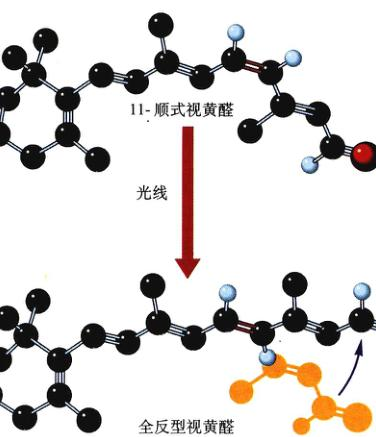
图 55.21 光线的吸收 当光线被一个感光色素吸收，色素分子捕捉光的部分 11-顺式视黄醛将发生一个形状的变化；这个分子的线性末端（图中右侧）旋转成几乎直线，变成全反型视黄醛。视黄醛形状的这个变化引发一系列反应，导致光感受器的超极化。
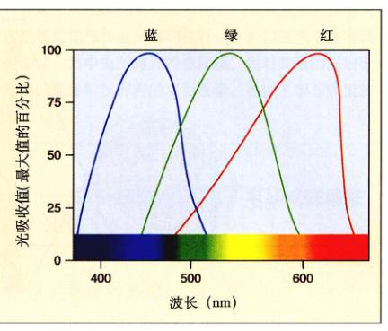
图 55.22 彩色视觉 视紫红质中顺式视黄醛的最大吸收值是 500 nm，而蓝视锥性的最大吸收值是 455 nm、绿视锥的最大吸收值是 530 nm、红视锥的最大吸收值是 625 nm。脑对其他颜色的接受则依靠这 3 种视锥系统的联合活动。
视网膜由 3 层细胞组成（图 55.23）：最靠近眼球外表面的那层细胞由视锥细胞和视杆细胞组成；其下的那层细胞则由双极细胞 (bipolar cell) 组成；最靠下的那层细胞由神经节细胞 (ganglion cell) 组成。这样，光线必须首先经过神经节细胞层以及双极细胞，才能到达感受器！视锥细胞和视杆细胞通过双极细胞通过突触连接。双极细胞又通过突触与神经节细胞连接，神经节细胞就会通过视神经将神经冲动传送到脑。因此，视网膜上的感觉信息的流动方向，与光线通过视网膜的方向是相反的。此外，视网膜中还有两种神经元，称做水平细胞 (horizontal cell) 和无长突细胞 (amacrine cell)。如果视网膜上的某个光点使水平细胞受到了位于这个光点中心的光感受器所发出的刺激，那么这个中心周围区域的反应就会受到抑制。这种侧向抑制作用加强了对比度，并使图像更清晰。
感觉在光感受器中的传输
光能被转换成神经冲动的过程，与感觉刺激通常的形成过程是相反的。这是因为，在黑暗中，光感受器会释放出一种抑制性的神经递质，从而造成双极神经元的超极化，这样就抑制了双极神经元向神经节细胞释放兴奋性神经递质。光线会抑制光感受器释放抑制性神经递质，从而刺激双极细胞以及神经节细胞，神经节细胞就会将动作电位传递到脑中。
视杆细胞以及视锥细胞外段的细胞膜上含有大量的钠离子通道。在黑暗中，这些通道大多保持着开放的状态。这样，钠离子就不通过断地扩散进入外段，并通过狭窄的柄进入内段。这个在无光照条件下存在的钠离子流，被称为暗电流。它会使光感受器的细胞膜出现一定程度的去极化。在光照条件下，外区段上的钠离子通道迅速地关闭，从而使暗电流减小，并引起光感受器的超极化。
研究人员发现，钠离子通道的打开离不开环鸟苷酸。如果 cGMP 被转化成了 GMP，那么这些离子通道就会关闭。光线是如何引起这种转化，并引发钠离子通道关闭的呢？当感光色素吸收光线后，顺式视黄醛与视蛋白脱离，这个过程就是漂白反应。在分离之后，视蛋白的形状就会发生改变。每个视蛋白大约与 100 多个 G 蛋白 (G protein) 相连（参见第7章和第54章）。当视蛋白的形状改变后，G 蛋白就会脱离下来，释放出亚基，从而激活成百上千个磷酸二酯酶分子。这种酶会把 cGMP 转化成 GMP。这样，就会使钠离子通道以大约每秒 1000 个的速度关闭，从而抑制暗电流。仅一个光子，就足以阻止 100 万个以上钠离子的进入，并引起光感受器的超极化，以减少抑制性神经递质的释放。从抑制中解放出来之后，双极细胞就可以激活神经节细胞，神经节细胞就会把动作电位传送到脑中。
Page 18 / 原始页码 1082

图 55.23 视网膜的结构 注意视杆细胞和视锥细胞是分布在视网膜的后部，不是前部。光穿过视网膜上其他 4 种细胞后才到达视杆细胞和视锥细胞。当感光色素被激活，它们就激活双极细胞，进而激活神经节细胞。视网膜中神经冲动的传播方向与光线相反。
55.4.3 脊椎动物视网膜内的视觉过程
动作电位沿着神经节细胞的轴突传播，并通过一种被称为外侧膝状核的结构被传递到大脑皮层的枕叶处（图 55.24）。在那里，脑将这种信息翻译成眼睛感受野的某一区域内的光线。神经节细胞跨越视网膜的运动模式形成了感受野的一张详细地图，从而允许视网膜和脑将物体转化成图像。此外，每个神经节细胞所接受到的神经冲动的频率，提供了各点光照强度的有关信息。而与 3 类视锥细胞（通过双极细胞）相连的神经节细胞，则提供了与颜色有关的信息。
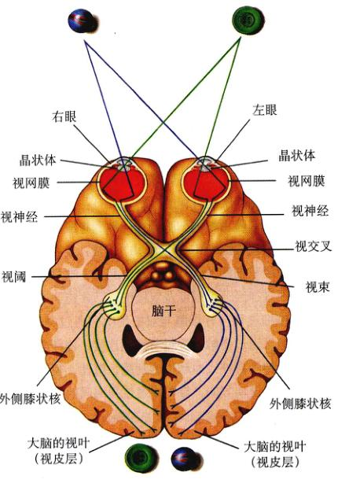
图 55.24 视觉信息的传递通路 动作电位通过视神经从视网膜传到外侧膝状核，再传到视皮层的枕叶。注意，因为视神经的中间纤维传到视交叉的另一侧，所以大脑的每个半球接受到的是来自双眼的信息。
Page 19 / 原始页码 1083
视网膜不同区域内的感受器、双极细胞以及神经节细胞的关系也有不同。在中央凹内，每个视锥细胞与双极细胞形成一对一连接。同时，每个双极细胞又通过突触只与一个神经节细胞相连接。这种一对一的连接使中央凹处的视觉非常精确。在中央凹外，很多视杆细胞可能会汇聚到一个双极细胞上，很多双极细胞又汇聚到一个神经节细胞上。这种汇聚，使得神经活动可以相互叠加。因此，中央凹外的区域对于昏暗的光线更敏感，但是，这也会造成视觉的准确度以及对色彩敏感度的降低。这就是昏暗的物体，如夜间暗淡的星星，在不直视时反而更清楚的原因。我们眼睛的外周部分扮演着发现者的角色，而中央凹则扮演着检查员的角色。
色盲 (color blindness) 是由于遗传性缺乏某种或某几种视锥细胞造成的。正常人的彩色视觉是三色视觉 (trichromat) 的，而那些缺乏两种视锥细胞的人则是二色视者 (dichromat)。那些缺少红色视锥的人（第一原色盲，即红色盲，protanopia）无法区分红色和绿色。男性比女性更容易患色盲。因为造成色盲的基因位于 X 染色体上，男性每个细胞内只有一条 X 染色体，而女性有两条 X 染色体。因此，女性的色盲性状可以处于隐性状态。
双眼视觉
灵长目动物（包括人类）以及大多数的肉食性动物都有两只眼睛，分别位于脸的两侧。当两只眼睛都注视着同一个物体的时候，每只眼睛所看到的图像略有不同。因为，两只眼睛的视角存在差异。这种图像的轻微移位（这种作用被称为视差）使双眼视觉 (binocular vision) 得以出现，并使动物获得了感知三维图像以及深度的能力。朝前的眼睛使重叠的区域达到最大。在这个区域中，就形成了立体感的视觉。
与此相反，被捕食的动物眼睛通常位于头部的两侧。这阻止了双眼视觉，但是却扩大了整个感受野的范围。对于这些动物来说，感知深度远不如发现可能出现在任何一个角度的敌人的重要。美国山鹬的眼睛完全位于头骨的两侧，这样，它们不用转头就可以拥有 360° 的视野！大多数鸟的眼睛都是长在侧边的。此外，每个视网膜上还有两个中央凹，以适应这种布局。一个中央凹提供清晰的前视像，类似于哺乳动物的视网膜内的中央凹；另一个则提供清晰的侧视像。
55.5 一些脊椎动物利用热、电场或磁场来定位
55.5.1 多样的感觉
视觉对于生活在一个明亮环境中的脊椎动物来说是主要的感觉，但是，可见光却仅仅是被脊椎动物用来感知自身所处环境的电磁波谱的一部分而已。
1) 热量
波长长于可见光的电磁辐射所携带的能量太低，不足以被光感受器感知。电磁波谱中的红外部分 (infrared) 通常被视为辐射热。热在水中是一种很差的环境刺激信号，因为水的比热很高，并会吸收热量。与此相反，空气的比热很低，因此空气中的是一种潜在的有效刺激。然而，现在所知，脊椎动物中能够感知红外辐射的只有蝰蛇。
蝰蛇头部的两侧，在眼睛和鼻孔之间，长有一对热感受器——陷窝器 (pit organ)（图 55.25）。被蒙上眼睛的蝰蛇，依靠此感受器仍然能够准确地袭击一只仅有余温的死鼠。每个热感受器由两个腔组成，二者之间隔着一层薄膜。落在薄膜上的红外辐射使之变暖，膜上的热感受器就会受到刺激。陷窝器内的热感受器的本质还不清楚。它可能是由对温度敏感的神经元组成，这些神经元控制着这两个腔。这两个陷窝器可以提供立体的信息。这个过程与双眼的工作机制类似。实际上，陷窝器所发出的信息是由蛇脑的视觉中心进行处理的。
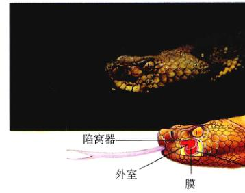
图 55.25 “看见”热 响尾蛇的眼睛和鼻孔之间的凹陷是陷窝器。在下图中可以看见，这个器官是由一块膜隔开的两个室组成。蝰蛇具有感受红外辐射（热）的特殊能力。
Page 20 / 原始页码 1084
2) 电场
虽然空气无法传导电流，但水却是一种良导体。所有的水生动物都可以通过肌肉收缩来产生电流。很多鱼类可以发现这些电流。电鱼 (electrical fish) 甚至能够从特化的电器官中发出电流。电鱼利用这些微弱的电流，来确定自己的物体的位置，并发现自己所处环境中的三维图像。
软骨鱼（鲨鱼和鳐鱼）拥有叫做罗氏壶腹 (ampullae of Lorenzini) 的电感受器。这些感受器细胞位于液囊内。这些液囊通过充满凝胶状物质的管道，开口于身体表面。这些凝胶状物质是良导体。因此，管道开口处的负电荷，可以使感受器的基部去极化，使之释放出神经递质，以提高感觉神经元的活性。这样，鲨鱼就能感觉到它们猎物肌肉收缩所产生的电场。虽然，罗氏壶腹消失在大部分硬骨鱼的进化过程中，但是，电感受器在某些类的硬骨鱼中又重新出现了。这些鱼利用类似于罗氏壶腹的感觉结构来完成类似的功用。电感受器也在另外一个时期独立地进化，例如，鸭嘴兽这种产卵的哺乳动物，其鸭嘴中的电感受器可以感知到小虾和鱼类的肌肉收缩所产生的电流。这样，这种哺乳动物就能够在夜晚以及浑浊的水中发现猎物。
3) 磁场
鳗、鲨鱼、蜜蜂以及很多鸟类似乎可以沿着地球的磁力线迁徙，甚至一些细菌也可以利用类似的力来确定自己的方向。关于黑笼子中的鸟，在没有视觉上任何暗示的情况下，通常会朝着它们在相应时期的迁移方向移动。然而，如果这个笼子被钢屏蔽后，它们就不会再这样做了。实际上，如果一只黑笼子内的电磁场被人为地顺时针旋转 120° 后，原本朝向北方的鸟就会转向东南方。对于这些脊椎动物体内的磁感感受器的本质，人们有很多猜测。但是有关它们的机制，我们依然知之甚少。
Page 21 / 原始页码 1085
小 结
55.1 动物拥有大量的感受器
- 机械感受器、化学感受器以及光学感受器，可以对不同类型的感感觉刺激做出反应；内感受器负责感受分别响应由体内产生的内部刺激和产生在外环境中的刺激。
55.2 化学感受器和机械感受器感知机体的状况
- 肌梭可以对骨骼肌的牵张做出响应。
- 味蕾是感觉味道的器官。它们分散在鱼类的身体表面以及陆生脊椎动物的舌头的乳头上。
- 颈动脉体以及主动脉体内的化学感受器可以感知血液的 pH 值以及氧含量，以协助调节呼吸。
- 内耳中的膜迷路上的毛细胞提供了感知加速度的能力。
55.3 听觉感受器检测空气中的声波
- 在陆生脊椎动物中，声波会引起耳膜的振动。
- 不同音调的声音会引起基底膜不同部位的振动，这样就可以刺激不同的毛细胞。
- 蝙蝠以及其他一些脊椎动物利用声纳来获得“无光的视觉”。
55.4 视觉感受器可以检测很宽波长范围内的光线
- 有弹性的晶状体能将光线汇聚到视网膜上。光学感受器就位于视网膜内。
- 光线引起视觉色素的光分解，这样就阻断了暗电流，并使光感受器超极化。这种效应中断了光感受器的抑制作用，这样就激活了双极细胞。
55.5 一些脊椎动物利用热、电场或磁场来定位
- 蛇的陷窝器使它们具有感知猎物的位置和运动的能力。很多水生脊椎动物可以感知肌肉收缩所产生的电流。一些脊椎动物可以利用地球的磁场来确定自己的位置。
问 题
- 你能够举出一种不会引起细胞膜去极化的感受器吗？
- 哪些机械感受器可以感知肌肉的牵张和肌腱内的张力？
- 脊椎动物耳朵内的何种结构可以感知身体位置相对于重力的变化？哪种结构可以感知加速度的变化？
- 声波是如何在中耳中传输及放大的？声音的音调是如何确定的？
- 鱼类以及两栖动物的聚焦模式与其他脊椎动物的聚焦模式有什么不同？
- 当光感受器吸收光线后，其外段上的离子通道将发生何种改变？
- 响尾蛇为什么会袭击一个移动的灯泡？
- 鲨鱼是如何发现自己的猎物的？为什么陆生脊椎动物没有这种感觉？
媒体资源
- 感受器器官简介
- 味觉
- 嗅觉
- 平衡感
- 旋转加速度
- 技能测验：皮肤内的感受器
- 嗅觉
- 半规管以及壶腹
- 实践活动：人类耳朵的构造
- 生物伦理学实例：听觉的丧失与工作
- 相关的科学论文：飞行中的蝙蝠
- 实践活动：人眼的构造
- 视觉